This is the first stop on our California mission > gold rush town road trip 2026
To get in, we take the 1 highway from Half Moon Bay to Carmel. I forgot how beautiful this stretch of road was. Magnificent California coastline.
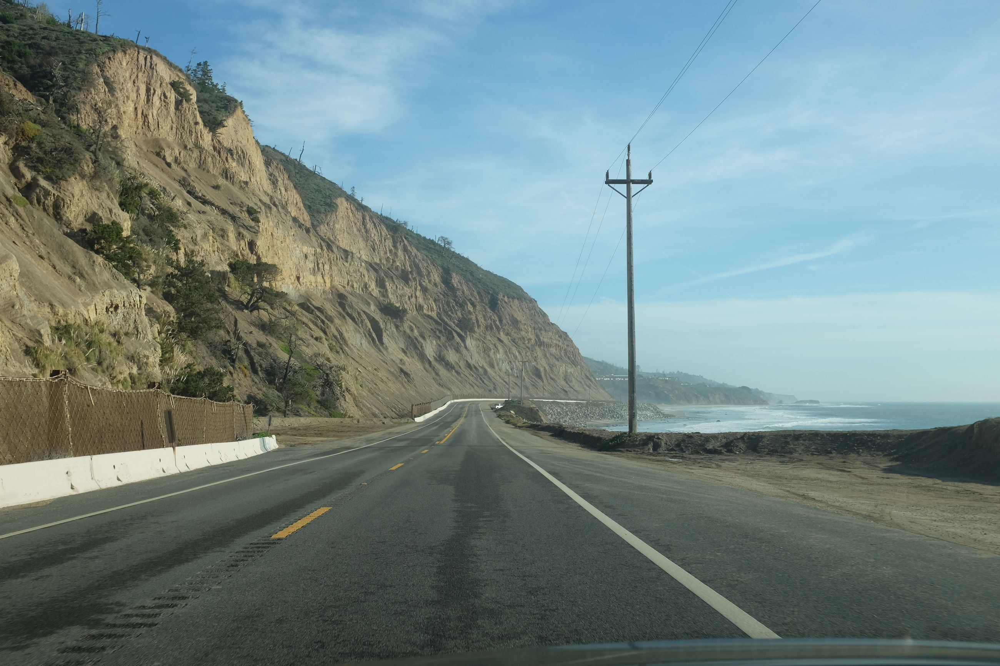
We even make a stop in into Santa Cruz to go see the mission.
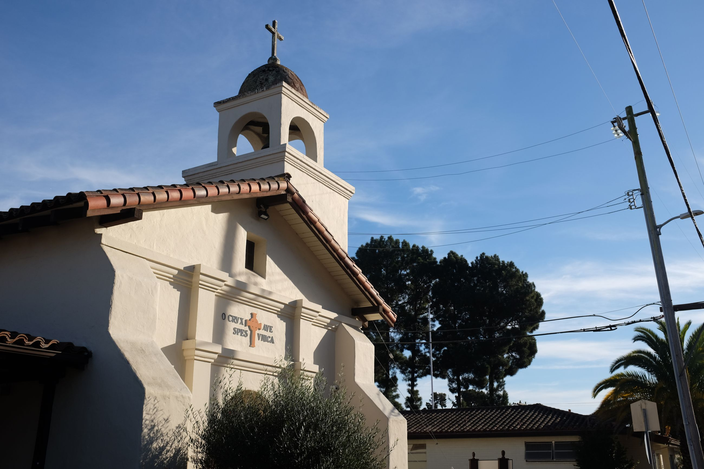
Right before entering Carmel, we do the 17-mile drive: a stretch of private, residential road that takes you closer to the shore. There's nothing like the California coast. It's foggy, chilly atmosphere at dusk with the ocean mist is unparalleled. There's a lone cypress tree still standing here as well -- it must've seen this place really develop.
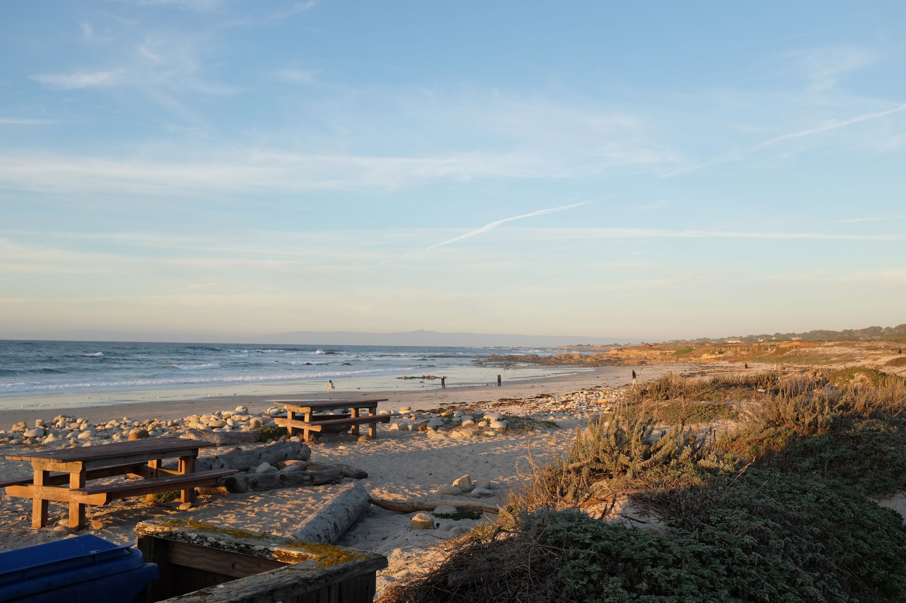 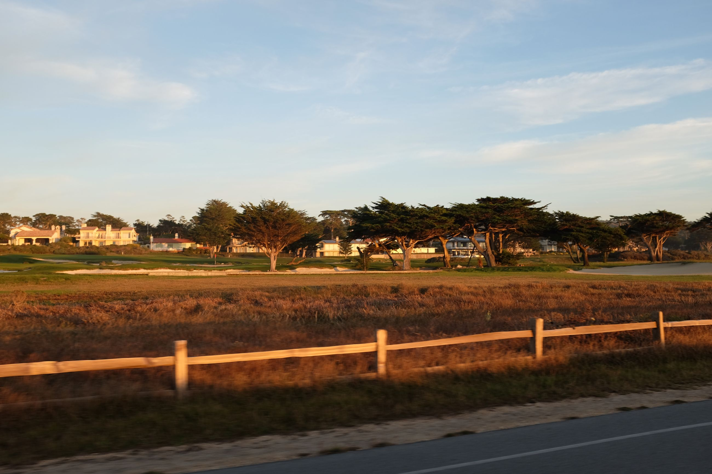 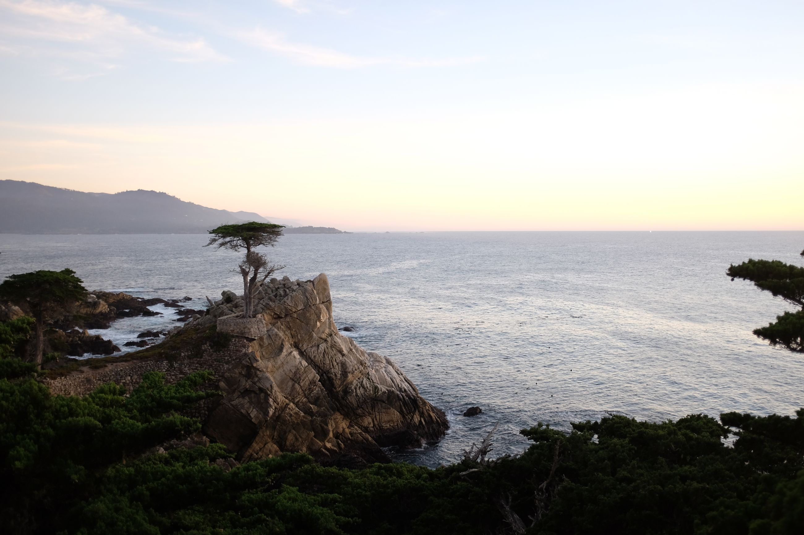
After sunset, we settle in and have some food at Flaherty's street market, and some wine at Albatross wine tasting. Carmel things. We stay the night at some unassuming and creaky lodge.
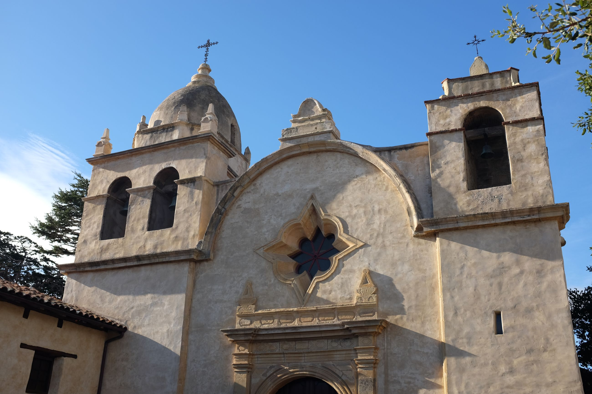
The next day is our main site: the Carmel Mission. This mission is the best preserved, inclusive of a cathedral, garden grounds and also a museum. I believe there's also Junipero Serra's -- the buidler of the missions-- final resting place here. Really peaceful.
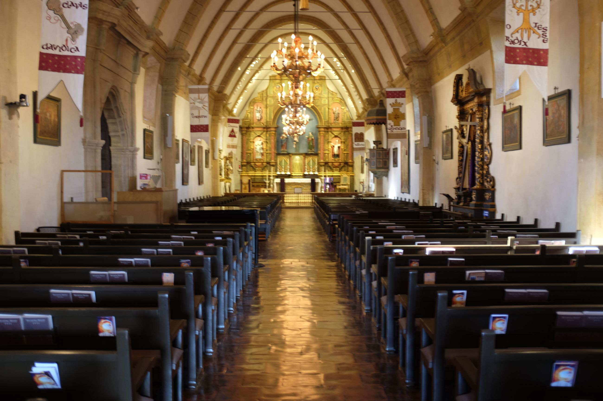 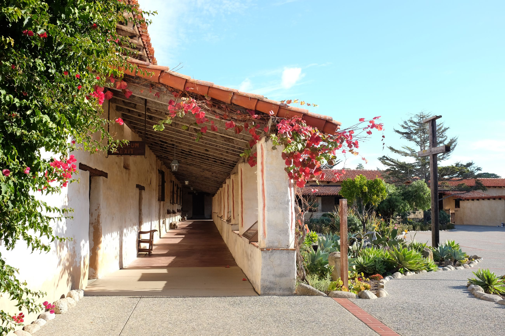 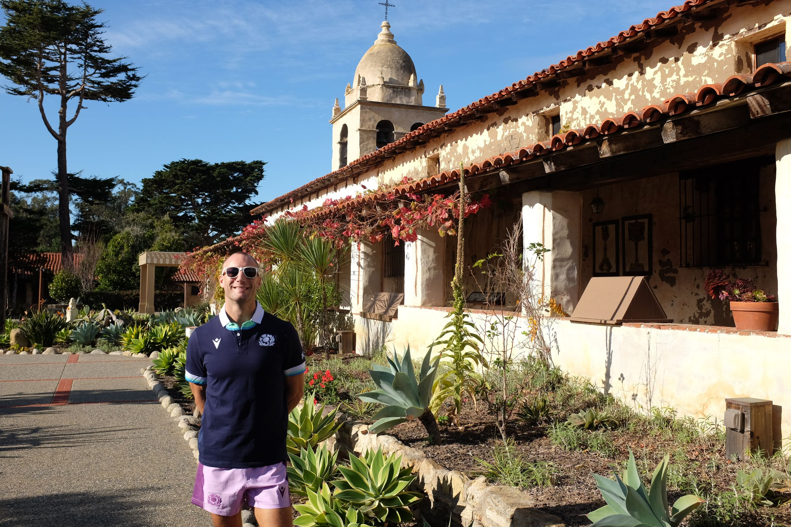 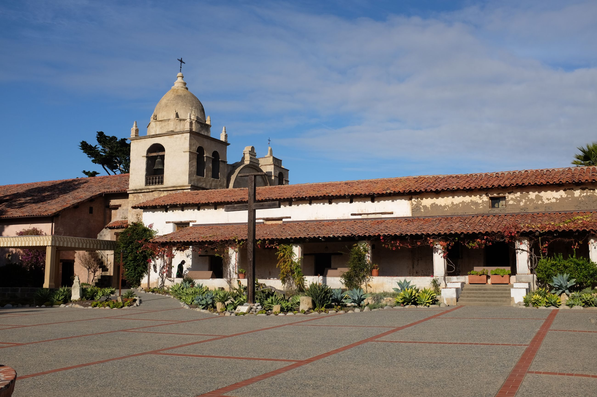
I write a postcard, mail it off at the Carmel post office, and am on my merry way to the next Mission: Soledad.
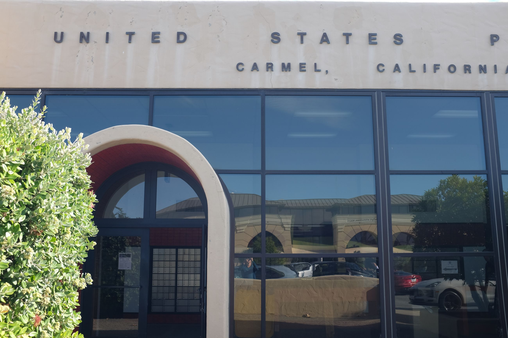